Code
library(tidyverse)
library(ggside)
library(brms)
library(broom)
library(broom.mixed)Princeton University
Younes Strittmatter
Here is a worksheet and assignment that combines Bayes (brms) with tidyverse tools. The focus is on the essentials when it comes to simple linear regression with brms.
Please read and run through this worksheet and answer the conceptual questions that are interleaved within them. At the end of each part, is a coding exercise based on the material you’ve read until then.
Load the primary packages.
We’ll use the penguins data set from the palmerpenguins package.
Rows: 344
Columns: 8
$ species <fct> Adelie, Adelie, Adelie, Adelie, Adelie, Adelie, Adel…
$ island <fct> Torgersen, Torgersen, Torgersen, Torgersen, Torgerse…
$ bill_length_mm <dbl> 39.1, 39.5, 40.3, NA, 36.7, 39.3, 38.9, 39.2, 34.1, …
$ bill_depth_mm <dbl> 18.7, 17.4, 18.0, NA, 19.3, 20.6, 17.8, 19.6, 18.1, …
$ flipper_length_mm <int> 181, 186, 195, NA, 193, 190, 181, 195, 193, 190, 186…
$ body_mass_g <int> 3750, 3800, 3250, NA, 3450, 3650, 3625, 4675, 3475, …
$ sex <fct> male, female, female, NA, female, male, female, male…
$ year <int> 2007, 2007, 2007, 2007, 2007, 2007, 2007, 2007, 2007…# A tibble: 6 × 8
species island bill_length_mm bill_depth_mm flipper_length_mm body_mass_g
<fct> <fct> <dbl> <dbl> <int> <int>
1 Adelie Torgersen 39.1 18.7 181 3750
2 Adelie Torgersen 39.5 17.4 186 3800
3 Adelie Torgersen 40.3 18 195 3250
4 Adelie Torgersen NA NA NA NA
5 Adelie Torgersen 36.7 19.3 193 3450
6 Adelie Torgersen 39.3 20.6 190 3650
# ℹ 2 more variables: sex <fct>, year <int>You might divide the data set by the three levels of species.
# A tibble: 3 × 2
species n
<fct> <int>
1 Adelie 152
2 Chinstrap 68
3 Gentoo 124To start, we’ll make a subset of the data called chinstrap.
Rows: 68
Columns: 8
$ species <fct> Chinstrap, Chinstrap, Chinstrap, Chinstrap, Chinstra…
$ island <fct> Dream, Dream, Dream, Dream, Dream, Dream, Dream, Dre…
$ bill_length_mm <dbl> 46.5, 50.0, 51.3, 45.4, 52.7, 45.2, 46.1, 51.3, 46.0…
$ bill_depth_mm <dbl> 17.9, 19.5, 19.2, 18.7, 19.8, 17.8, 18.2, 18.2, 18.9…
$ flipper_length_mm <int> 192, 196, 193, 188, 197, 198, 178, 197, 195, 198, 19…
$ body_mass_g <int> 3500, 3900, 3650, 3525, 3725, 3950, 3250, 3750, 4150…
$ sex <fct> female, male, male, female, male, female, female, ma…
$ year <int> 2007, 2007, 2007, 2007, 2007, 2007, 2007, 2007, 2007…We’ve done from a full data set with \(N = 344\) rows, to a subset with \(n = 68\) rows. (“$” signs hold LaTex snippets)
Our focal variables will be body_mass_g and bill_length_mm. Here they are in a scatter plot.
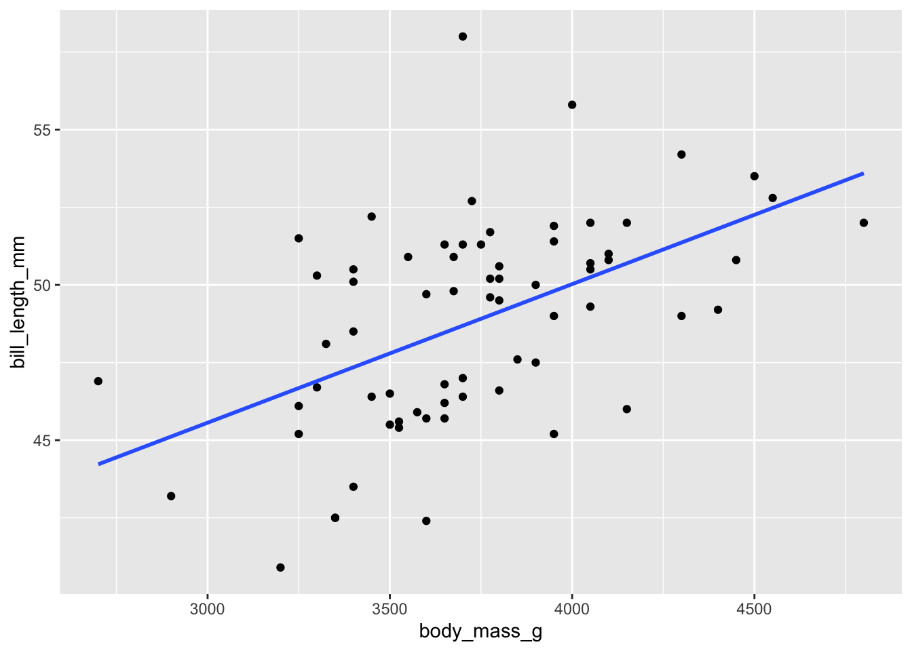
We can augment the plot with some nice functions from the ggside package.
chinstrap %>%
ggplot(aes(x = body_mass_g, y = bill_length_mm)) +
geom_point() +
stat_smooth(method = "lm", formula = 'y ~ x', se = FALSE) +
# from ggside
geom_xsidehistogram(bins = 30) +
geom_ysidehistogram(bins = 30) +
scale_xsidey_continuous(breaks = NULL) +
scale_ysidex_continuous(breaks = NULL) +
theme(ggside.panel.scale = 0.25)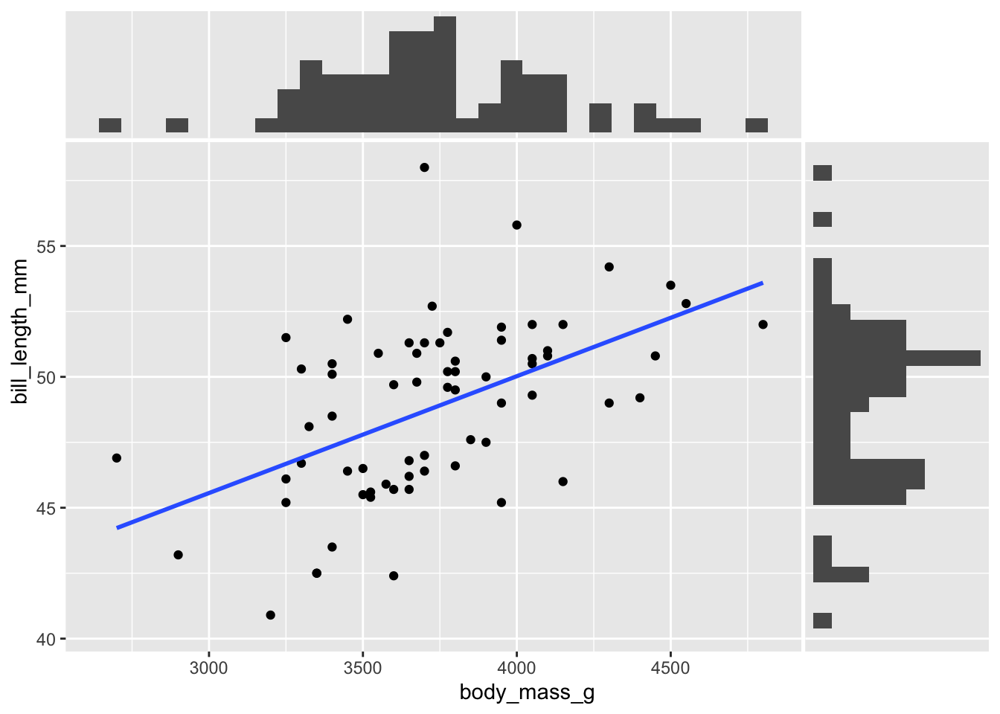
It’s a good idea to get a sense of the sample statistics. Here are the means and SD’s for the two variables.
# A tibble: 1 × 4
body_mass_g_mean body_mass_g_sd bill_length_mm_mean bill_length_mm_sd
<dbl> <dbl> <dbl> <dbl>
1 3733. 384. 48.8 3.34And you know that more efficient way to compute sample statistics for multiple variables is to first convert the data into the long format with pivot_longer(). Then you use a group_by() line before the main event in summarise().
# A tibble: 2 × 4
name mean sd n_missing
<chr> <dbl> <dbl> <int>
1 bill_length_mm 48.8 3.34 0
2 body_mass_g 3733. 384. 0The marginal histograms created by geom_xsidehistogram() and geom_ysidehistogram() from the ggside package show the univariate distribution of each focal variable:
The x-side histogram displays how body_mass_g values are distributed across the sample.
The y-side histogram shows the distribution of bill_length_mm.
These histograms help us to assess:
Shape of the distribution (e.g., normal, skewed, bimodal).
Spread (range of values and whether it’s wide or narrow).
Center (whether the values cluster around the means reported in the summary).
Outliers or gaps (e.g., isolated bars that indicate extreme or missing clusters).
We’ll fit the model
\[ \begin{align} \text{bill_length_mm}_i & = \beta_0 + \beta_1 \text{body_mass_g}_i + \epsilon_i \\ \epsilon_i & \sim \operatorname{Normal}(0, \sigma_\epsilon) \end{align} \]
where bill_length_mm is the dependent variable or a response variable. The sole predictor is body_mass_g. Both variables have \(i\) subscripts, which indicate they vary across the \(i\) rows in the data set. For now, you might think if \(i\) as standing for “index.” The last term in the first line, \(\epsilon\), is often called the error, or noise term. In the second line, we see we’re making the conventional assumption the “errors” are normally distributed around the regression line.
An alternative and equivalent way to write that equation is
\[ \begin{align} \text{bill_length_mm}_i & \sim \operatorname{Normal}(\mu_i, \sigma) \\ \mu_i & = \beta_0 + \beta_1 \text{body_mass_g}_i, \end{align} \]
which is meant to convey we are modeling bill_length_mm as normally distributed, with a conditional mean. You don’t tend to see equations written this way in the OLS paradigm. However, this style of notation will serve us better when we start modeling our data with other distributions.
This notation grows on you
Fitting the model with the base R lm() function, which uses the OLS algorithm.
Call:
lm(formula = bill_length_mm ~ 1 + body_mass_g, data = chinstrap)
Residuals:
Min 1Q Median 3Q Max
-5.8399 -2.2370 0.3247 1.8385 9.3138
Coefficients:
Estimate Std. Error t value Pr(>|t|)
(Intercept) 3.217e+01 3.443e+00 9.344 1.07e-13 ***
body_mass_g 4.463e-03 9.176e-04 4.863 7.48e-06 ***
---
Signif. codes: 0 '***' 0.001 '**' 0.01 '*' 0.05 '.' 0.1 ' ' 1
Residual standard error: 2.887 on 66 degrees of freedom
Multiple R-squared: 0.2638, Adjusted R-squared: 0.2527
F-statistic: 23.65 on 1 and 66 DF, p-value: 7.48e-06The point estimates are in scientific notation. We can pull them with the coef() function.
We can compute fitted values, or predictions, with the predict() function. Here’s the default behavior.
1 2 3 4 5 6 7 8
47.79362 49.57870 48.46303 47.90519 48.79773 49.80183 46.67795 48.90930
9 10 11 12 13 14 15 16
50.69437 48.68616 49.13243 49.02086 48.68616 50.24810 48.12832 50.24810
17 18 19 20 21 22 23 24
46.90108 48.68616 47.57049 51.81005 48.23989 47.34735 45.11601 49.13243
25 26 27 28 29 30 31 32
46.90108 50.69437 47.34735 49.13243 48.68616 52.47945 46.45481 51.36378
33 34 35 36 37 38 39 40
47.12422 50.47124 48.23989 49.57870 49.35556 53.59512 44.22347 52.25632
41 42 43 44 45 46 47 48
49.80183 48.46303 48.01676 47.79362 48.57459 52.03318 47.34735 51.36378
49 50 51 52 53 54 55 56
46.67795 48.57459 47.01265 49.80183 48.23989 50.24810 47.12422 47.57049
57 58 59 60 61 62 63 64
46.67795 50.24810 49.13243 47.90519 49.80183 48.46303 48.46303 50.02497
65 66 67 68
47.34735 49.02086 50.47124 49.02086 We get one prediction, one fitted value, for each case in the data set. We can express the uncertainty around those predictions with confidence intervals.
fit lwr upr
1 47.79362 46.97456 48.61268
2 49.57870 48.81580 50.34160
3 48.46303 47.74771 49.17834
4 47.90519 47.10905 48.70133
5 48.79773 48.09864 49.49682
6 49.80183 48.99783 50.60584We might also ask for a standard error for each prediction.
fit se.fit df residual.scale
1 47.79362 0.4102359 66 2.886728
2 49.57870 0.3821060 66 2.886728
3 48.46303 0.3582736 66 2.886728
4 47.90519 0.3987564 66 2.886728
5 48.79773 0.3501459 66 2.886728
6 49.80183 0.4026961 66 2.886728
7 46.67795 0.5648454 66 2.886728
8 48.90930 0.3504110 66 2.886728
9 50.69437 0.5185569 66 2.886728
10 48.68616 0.3513814 66 2.886728
11 49.13243 0.3554108 66 2.886728
12 49.02086 0.3521734 66 2.886728
13 48.68616 0.3513814 66 2.886728
14 50.24810 0.4550963 66 2.886728
15 48.12832 0.3789333 66 2.886728
16 50.24810 0.4550963 66 2.886728
17 46.90108 0.5296025 66 2.886728
18 48.68616 0.3513814 66 2.886728
19 47.57049 0.4359183 66 2.886728
20 51.81005 0.7050167 66 2.886728
21 48.23989 0.3707575 66 2.886728
22 47.34735 0.4647215 66 2.886728
23 45.11601 0.8407923 66 2.886728
24 49.13243 0.3554108 66 2.886728
25 46.90108 0.5296025 66 2.886728
26 50.69437 0.5185569 66 2.886728
27 47.34735 0.4647215 66 2.886728
28 49.13243 0.3554108 66 2.886728
29 48.68616 0.3513814 66 2.886728
30 52.47945 0.8273195 66 2.886728
31 46.45481 0.6015246 66 2.886728
32 51.36378 0.6270243 66 2.886728
33 47.12422 0.4961023 66 2.886728
34 50.47124 0.4856973 66 2.886728
35 48.23989 0.3707575 66 2.886728
36 49.57870 0.3821060 66 2.886728
37 49.35556 0.3661365 66 2.886728
38 53.59512 1.0397147 66 2.886728
39 44.22347 1.0105441 66 2.886728
40 52.25632 0.7859885 66 2.886728
41 49.80183 0.4026961 66 2.886728
42 48.46303 0.3582736 66 2.886728
43 48.01676 0.3882941 66 2.886728
44 47.79362 0.4102359 66 2.886728
45 48.57459 0.3541019 66 2.886728
46 52.03318 0.7451900 66 2.886728
47 47.34735 0.4647215 66 2.886728
48 51.36378 0.6270243 66 2.886728
49 46.67795 0.5648454 66 2.886728
50 48.57459 0.3541019 66 2.886728
51 47.01265 0.5126128 66 2.886728
52 49.80183 0.4026961 66 2.886728
53 48.23989 0.3707575 66 2.886728
54 50.24810 0.4550963 66 2.886728
55 47.12422 0.4961023 66 2.886728
56 47.57049 0.4359183 66 2.886728
57 46.67795 0.5648454 66 2.886728
58 50.24810 0.4550963 66 2.886728
59 49.13243 0.3554108 66 2.886728
60 47.90519 0.3987564 66 2.886728
61 49.80183 0.4026961 66 2.886728
62 48.46303 0.3582736 66 2.886728
63 48.46303 0.3582736 66 2.886728
64 50.02497 0.4272392 66 2.886728
65 47.34735 0.4647215 66 2.886728
66 49.02086 0.3521734 66 2.886728
67 50.47124 0.4856973 66 2.886728
68 49.02086 0.3521734 66 2.886728Instead of relying on predictions from the values in the data, we might instead define a sequence of values from the predictor variable. We’ll call those nd.
Rows: 50
Columns: 1
$ body_mass_g <dbl> 2700.000, 2742.857, 2785.714, 2828.571, 2871.429, 2914.286…We can insert our nd data into the newdata argument.
fit lwr upr
1 44.22347 42.20585 46.24108
2 44.41473 42.47057 46.35888
3 44.60598 42.73489 46.47708
4 44.79724 42.99874 46.59574
5 44.98850 43.26207 46.71493
6 45.17976 43.52482 46.83469Now we wrangle those predictions a bit and pump the results right into ggplot().
predict(fit1.ols,
interval = "confidence",
newdata = nd) %>%
data.frame() %>%
bind_cols(nd) %>%
ggplot(aes(x = body_mass_g)) +
# 95% confidence interval ribbon
geom_ribbon(aes(ymin = lwr, ymax = upr),
alpha = 1/3) +
# point estimate line
geom_line(aes(y = fit)) +
geom_point(data = chinstrap,
aes(y = bill_length_mm))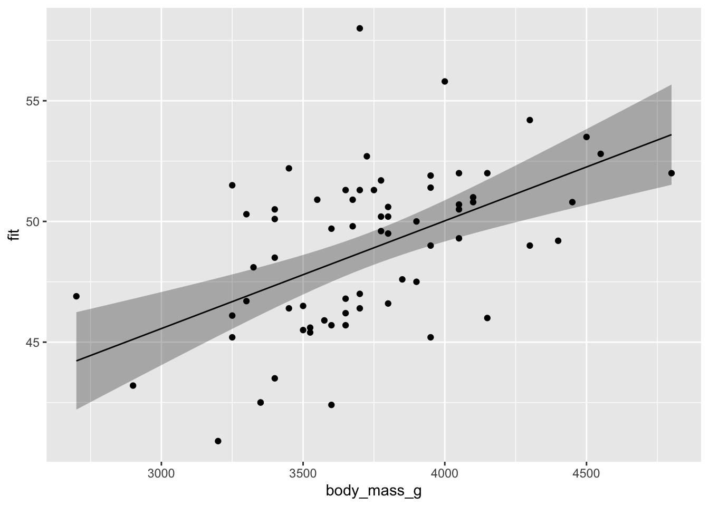
If we wanted to, we could look at the residuals with help from the residuals() function.
1 2 3 4 5 6 7
-1.2936220 0.4213003 2.8369738 -2.5051894 3.9022718 -4.6018344 -0.5779485
8 9 10 11 12 13 14
2.3907044 -4.6943732 2.6138391 -2.5324303 2.6791371 -1.6861609 1.7518962
15 16 17 18 19 20 21
-2.2283241 0.2518962 3.3989168 9.3138391 -1.1704873 -2.6100467 -5.8398915
22 23 24 25 26 27 28
1.1526474 -1.9160056 1.4675697 -0.2010832 1.3056268 3.1526474 0.3675697
29 30 31 32 33 34 35
-2.2861609 0.3205492 -5.5548138 2.8362227 -4.6242179 0.5287615 1.4601085
36 37 38 39 40 41 42
-2.0786997 -1.7555650 -1.5951243 2.6765332 1.2436839 -0.8018344 -2.2630262
43 44 45 46 47 48 49
2.8832432 -2.2936220 2.3254065 -1.2331814 2.7526474 -2.3637773 4.8220515
50 51 52 53 54 55 56
1.2254065 1.0873494 1.5981656 -2.5398915 0.4518962 -4.6242179 4.6295127
57 58 59 60 61 62 63
-1.4779485 -0.9481038 1.0675697 -2.3051894 2.0981656 -1.6630262 -2.7630262
64 65 66 67 68
5.7750309 -3.8473526 0.5791371 0.3287615 1.1791371 Here we might put them in a tibble and display them in a plot.
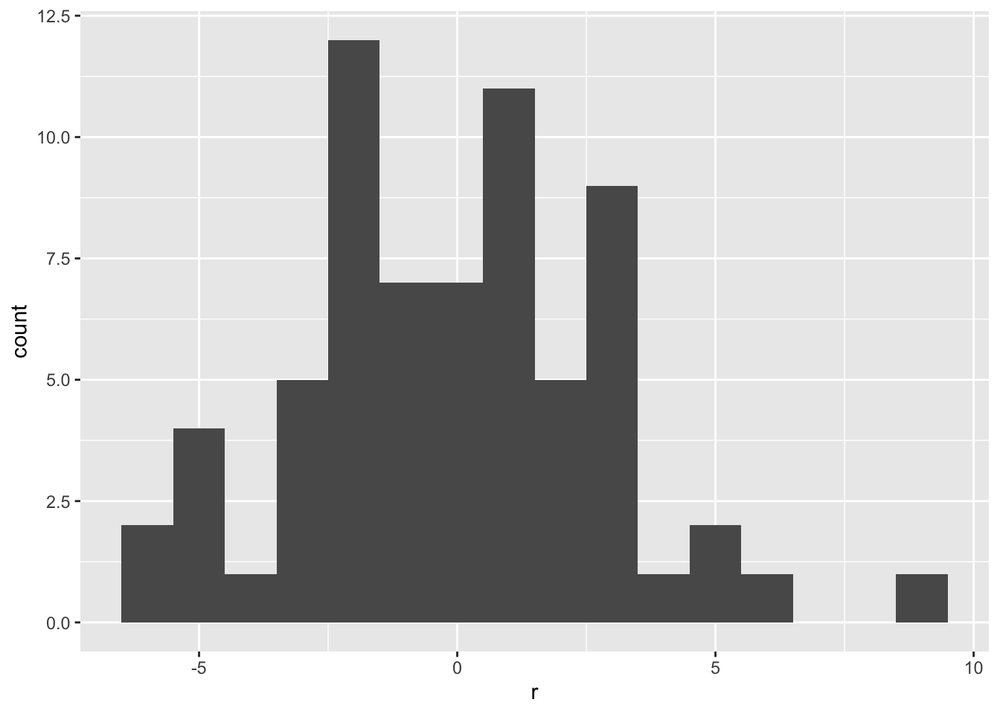
We can predict both of these values before even calculating them, based on how OLS works.
OLS (Ordinary Least Squares) does a few things by design:
So the output of summary(fit1.ols) already tells us what to expect:
Residual standard error: 2.887 on 66 degrees of freedom
[1] 1.600027e-16[1] 2.865104Here’s the model we fit:
\begin{align} \text{bill_length_mm}_i &= \beta_0 + \beta_1 \cdot \text{body_mass_g}_i + \epsilon_i \\\ \epsilon_i &\sim \text{Normal}(0, \sigma_\epsilon) \end{align}
So we model each penguin’s bill length as a linear function of its body mass, with some error ($\epsilon_i$). That error term is supposed to be normally distributed around zero, with standard deviation $\sigma_\epsilon$.
From our calculations:
Mean of residuals = 0 → ✔️ matches the assumption $\epsilon_i \sim \text{Normal}(0, \dots)$
SD of residuals ≈ 2.887 → ✔️ this is our estimate of $\sigma_\epsilon$
So yes, it all lines up nicely with the math.
We’ll be fitting our Bayesian models with the brms package. The primary function is brm().
brm() can work a lot like the OLS-based lm() function. For example, here’s how to fit a Bayesian version of our OLS model fit1.ols.
Notice what’s happening in the console, below. We’ll get into the details of what just happened later. For now, appreciate we just fit our first Bayesian model, and it wasn’t all that hard.
Summarize the model.
Family: gaussian
Links: mu = identity; sigma = identity
Formula: bill_length_mm ~ 1 + body_mass_g
Data: chinstrap (Number of observations: 68)
Draws: 4 chains, each with iter = 2000; warmup = 1000; thin = 1;
total post-warmup draws = 4000
Regression Coefficients:
Estimate Est.Error l-95% CI u-95% CI Rhat Bulk_ESS Tail_ESS
Intercept 32.19 3.57 25.21 39.23 1.00 4993 2775
body_mass_g 0.00 0.00 0.00 0.01 1.00 5101 2925
Further Distributional Parameters:
Estimate Est.Error l-95% CI u-95% CI Rhat Bulk_ESS Tail_ESS
sigma 2.92 0.25 2.49 3.46 1.00 1812 1920
Draws were sampled using sampling(NUTS). For each parameter, Bulk_ESS
and Tail_ESS are effective sample size measures, and Rhat is the potential
scale reduction factor on split chains (at convergence, Rhat = 1).brm() output from the in the lm() output. Ignore ‘Rhat,’ ‘Bulk_ESS,’ and ‘Tail_ESS’ for now.Fit a frequentist linear model using lm()
Fit a Bayesian model using brm() with default priors
Summarization
summary(fit1.ols) # lm() gives point estimates, standard errors, t-values, and p-values. # It assumes residuals are normally distributed and focuses on significance.
summary(fit1.b) # brm() gives posterior means (Estimate), posterior standard deviations (Est.Error), # and 95% credible intervals (l-95% CI, u-95% CI). No p-values are shown. # The model also estimates sigma as a parameter with uncertainty.
Interpretation:
lm() tells you whether an effect is “significant” by comparing it to 0
brm() tells you what values the coefficient likely takes, based on the posterior
sigma in lm() is a point estimate (residual standard error), in brm() it’s a parameter with a distribution and credible interval.
In short:
lm(): inference via null hypothesis testing
brm(): inference via probability distributions over parameters
brm() talks about things?The brm() output is more focused on distributions and uncertainty than lm(). It’s less about testing a single value and more about describing what range of values are plausible given the data.
We can get a quick and dirty plot of the fitted line with the conditional_effects() function.
We might want to compare the coefficient summaries from the OLS model to those from the Bayesian model. Here’s the frequentist summary:
2.5 % 97.5 %
(Intercept) 32.174192865 3.4433622902 25.299298235 39.049087495
body_mass_g 0.004462694 0.0009176106 0.002630625 0.006294763We can compute a focused summary of the Bayesian model with the fixef() function.
Estimate Est.Error Q2.5 Q97.5
Intercept 32.208875451 3.5034661107 25.299619059 39.117082452
body_mass_g 0.004458494 0.0009335195 0.002604986 0.006302437In this case, the results are very similar.
We can also pull this information from our OLS model with the broom::tidy() function.
# A tibble: 2 × 7
term estimate std.error statistic p.value conf.low conf.high
<chr> <dbl> <dbl> <dbl> <dbl> <dbl> <dbl>
1 (Intercept) 32.2 3.44 9.34 1.07e-13 25.3 39.0
2 body_mass_g 0.00446 0.000918 4.86 7.48e- 6 0.00263 0.00629If you would like to use the tidy() function with your brms models, it will have to be the version of tidy() from the broom.mixed package.
# A tibble: 3 × 8
effect component group term estimate std.error conf.low conf.high
<chr> <chr> <chr> <chr> <dbl> <dbl> <dbl> <dbl>
1 fixed cond <NA> (Intercept) 32.2 3.50 25.3 39.1
2 fixed cond <NA> body_mass_g 0.00446 0.000934 0.00260 0.00630
3 ran_pars cond Residual sd__Observa… 2.93 0.262 2.48 3.50 Here’s how to wrangle and combine these two results into a single data frame. Then we’ll make a coefficient plot.
bind_rows(
tidy(fit1.ols, conf.int = TRUE) %>% select(term, estimate, contains("conf")),
tidy(fit1.b) %>% select(term, estimate, contains("conf")) %>% filter(term != "sd__Observation")
) %>%
mutate(method = rep(c("lm()", "brm()"), each = 2)) %>%
ggplot(aes(x = estimate, xmin = conf.low, xmax = conf.high, y = method)) +
geom_pointrange() +
scale_x_continuous("parameter space", expand = expansion(mult = 0.2)) +
scale_y_discrete(expand = expansion(mult = 5)) +
facet_wrap(~ term, scales = "free_x")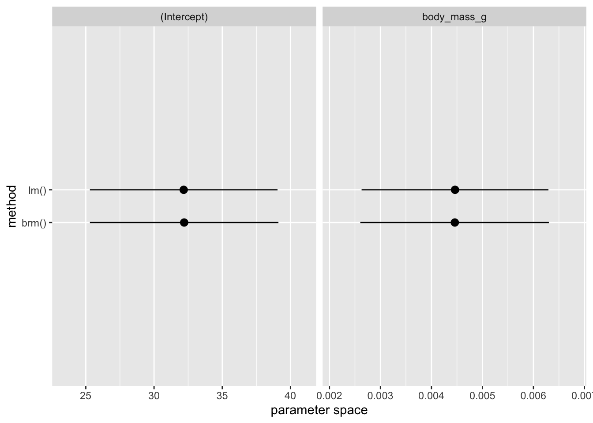
At a superficial level for simple conventional regression type models, the results from a Bayesian brm() model will be very similar to those from an OLS lm() model. This will not always be case, and even in this example there are many differences once we look below the surface.
Go back to the full penguins data set. This time, make a subset of the data called gentoo, which is only the cases for which species == "Gentoo".
Can you fit the same OLS model to these data?
How about plotting the results with predict()?
Can you fit the same default Bayesian brm() model to these data?
How about plotting the results with conditional_effects()?
Can you make a coefficient plot comparing the new OLS and Bayesian beta coefficients?
Fit OLS model for Gentoo
Call:
lm(formula = bill_length_mm ~ body_mass_g, data = gentoo)
Residuals:
Min 1Q Median 3Q Max
-5.8802 -1.5075 -0.0575 1.3118 8.1107
Coefficients:
Estimate Std. Error t value Pr(>|t|)
(Intercept) 26.739549 2.106594 12.693 <2e-16 ***
body_mass_g 0.004091 0.000413 9.905 <2e-16 ***
---
Signif. codes: 0 '***' 0.001 '**' 0.01 '*' 0.05 '.' 0.1 ' ' 1
Residual standard error: 2.3 on 121 degrees of freedom
Multiple R-squared: 0.4478, Adjusted R-squared: 0.4432
F-statistic: 98.12 on 1 and 121 DF, p-value: < 2.2e-16Create new data for predictions
Predict with confidence intervals
Plot
ggplot() +
geom_point(data = gentoo, aes(x = body_mass_g, y = bill_length_mm)) +
geom_ribbon(data = pred_ols, aes(x = body_mass_g, ymin = lwr, ymax = upr), fill = "skyblue", alpha = 0.3) +
geom_line(data = pred_ols, aes(x = body_mass_g, y = fit), color = "blue") +
labs(title = "OLS Predictions for Gentoo Penguins")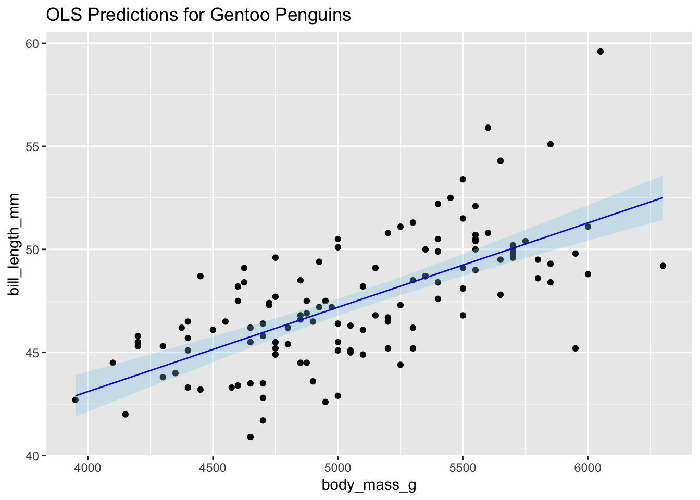
Family: gaussian
Links: mu = identity; sigma = identity
Formula: bill_length_mm ~ body_mass_g
Data: gentoo (Number of observations: 123)
Draws: 4 chains, each with iter = 2000; warmup = 1000; thin = 1;
total post-warmup draws = 4000
Regression Coefficients:
Estimate Est.Error l-95% CI u-95% CI Rhat Bulk_ESS Tail_ESS
Intercept 26.73 2.13 22.46 30.91 1.00 4031 2692
body_mass_g 0.00 0.00 0.00 0.00 1.00 4123 2447
Further Distributional Parameters:
Estimate Est.Error l-95% CI u-95% CI Rhat Bulk_ESS Tail_ESS
sigma 2.32 0.15 2.05 2.65 1.00 1733 1500
Draws were sampled using sampling(NUTS). For each parameter, Bulk_ESS
and Tail_ESS are effective sample size measures, and Rhat is the potential
scale reduction factor on split chains (at convergence, Rhat = 1).Plot Bayesian conditional effects
Coefficient plot comparing OLS and Bayesian estimates
Extract tidy coefficient summaries
Combine and plot
We can extract the posterior draws from our Bayesian models with the as_draws_df() function.
# A draws_df: 1000 iterations, 4 chains, and 6 variables
b_Intercept b_body_mass_g sigma Intercept lprior lp__
1 31 0.0051 2.7 49 -4.2 -173
2 33 0.0044 2.6 49 -4.2 -172
3 35 0.0038 2.5 49 -4.2 -173
4 33 0.0044 2.5 49 -4.2 -172
5 35 0.0038 2.5 49 -4.2 -173
6 34 0.0040 3.5 49 -4.4 -174
7 33 0.0043 3.2 49 -4.4 -172
8 29 0.0050 3.2 48 -4.4 -174
9 30 0.0050 2.5 49 -4.2 -172
10 36 0.0035 2.6 49 -4.2 -172
# ... with 3990 more draws
# ... hidden reserved variables {'.chain', '.iteration', '.draw'}Note the meta data. We can get a sense of the full posterior distributions of the \(\beta\) parameters with plots.
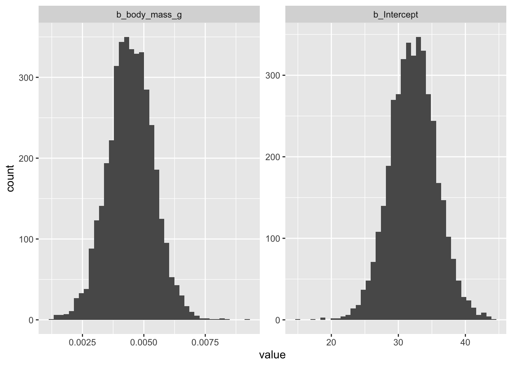
We might summarize those posterior distributions with basic descriptive statistics, like their means, SD’s, and inner 95-percentile range.
# A tibble: 2 × 5
name mean sd ll ul
<chr> <dbl> <dbl> <dbl> <dbl>
1 b_Intercept 32.2 3.50 25.3 39.1
2 b_body_mass_g 0.00446 0.000934 0.00260 0.00630Notice how these values match up exactly with those from fixef().
Estimate Est.Error Q2.5 Q97.5
Intercept 32.208875451 3.5034661107 25.299619059 39.117082452
body_mass_g 0.004458494 0.0009335195 0.002604986 0.006302437Thus,
These are not exactly the same, mind you. But they serve similar functions.
We can also get a sense of these distributions with the plot() function.
Ignore the trace plots on the right for a moment. And let’s consider the pairs() plot.
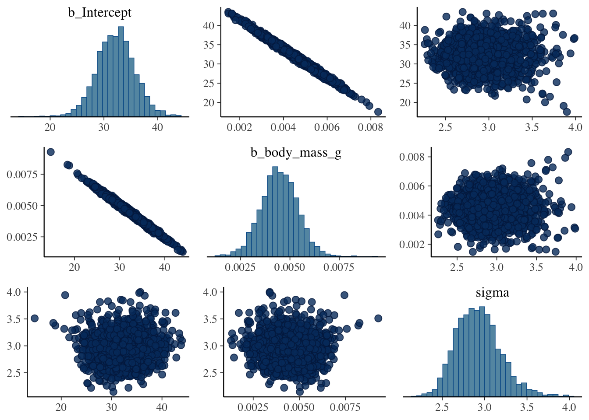
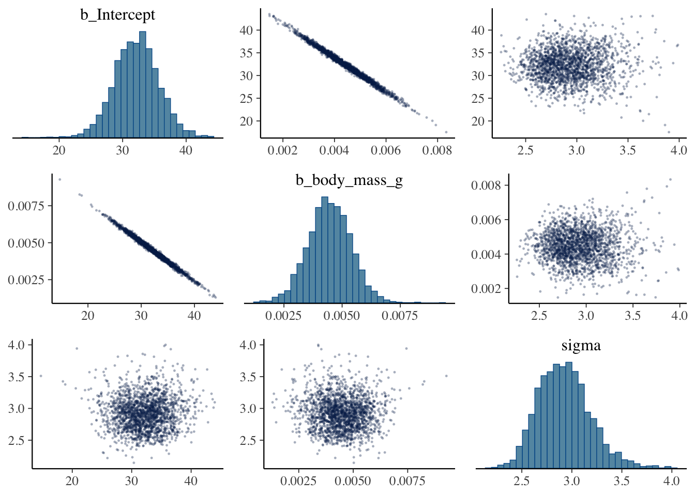
These are marginal distributions.
They show the distribution of individual parameters, integrating (or marginalizing) over all other parameters.
For example, the diagonal for b_body_mass_g shows the posterior distribution of the slope ignoring the intercept and all other parameters.
Distributions on the off-diagonal
These are joint distributions.
They show the joint posterior between two parameters — how they co-vary.
For example, a slanted cloud would imply that when the intercept is higher, the slope tends to be lower (or vice versa).
Notice how the two \(\beta\) parameters seem to have a strong negative correlation. We can quantify that correlation with the vcov() function.
Intercept body_mass_g
Intercept 12.274274789 -3.254609e-03
body_mass_g -0.003254609 8.714586e-07 Intercept body_mass_g
Intercept 1.0000000 -0.9951248
body_mass_g -0.9951248 1.0000000This correlation/covariance among the parameters is not unique to Bayesian models. Here’s the vcov() output for the OLS model.
(Intercept) body_mass_g
(Intercept) 11.856743861 -3.143295e-03
body_mass_g -0.003143295 8.420092e-07I’m not aware of an easy way to get that output in a correlation metric for our OLS model. Here’s how to compute the correlation by hand.
[1] -0.9948188That code follows the definition of a covariance, which can be expressed as
\[ \text{Cov}(x, y) = \rho \sigma_x \sigma_y, \]
where \(\sigma_x\) is the standard deviation for x, \(\sigma_y\) is the standard deviation for y, and \(\rho\) is their correlation. And thus, you can convert a covariance into a correlation with the formula
\[ \rho = \frac{\sigma_{xy}}{\sigma_x \sigma_y}, \]
where \(\sigma_{xy}\) is the covariance of x and y.
Let’s save the as_draws_df() output for our model as an object called draws.
Rows: 4,000
Columns: 9
$ b_Intercept <dbl> 30.60659, 32.80956, 35.14606, 32.82047, 34.84944, 34.134…
$ b_body_mass_g <dbl> 0.005054460, 0.004369258, 0.003775224, 0.004355861, 0.00…
$ sigma <dbl> 2.657725, 2.560867, 2.506662, 2.504239, 2.468613, 3.4674…
$ Intercept <dbl> 49.47533, 49.12039, 49.23931, 49.08128, 49.18026, 49.241…
$ lprior <dbl> -4.204394, -4.189637, -4.173603, -4.178571, -4.166962, -…
$ lp__ <dbl> -173.3409, -172.0455, -173.2588, -172.3628, -173.3106, -…
$ .chain <int> 1, 1, 1, 1, 1, 1, 1, 1, 1, 1, 1, 1, 1, 1, 1, 1, 1, 1, 1,…
$ .iteration <int> 1, 2, 3, 4, 5, 6, 7, 8, 9, 10, 11, 12, 13, 14, 15, 16, 1…
$ .draw <int> 1, 2, 3, 4, 5, 6, 7, 8, 9, 10, 11, 12, 13, 14, 15, 16, 1…For each parameter in the model, we have 4,000 draws from the posterior.
\[\widehat{\text{bill_length_mm}}_i = \beta_0 + \beta_1 \text{body_mass_g}_i.\]
Let’s break the 4000 draws down with our draws object.
# adjust the parameter names
draws <- draws %>%
mutate(beta0 = b_Intercept,
beta1 = b_body_mass_g)
# Note: go through this one line at a time
draws %>%
select(.draw, beta0, beta1) %>%
mutate(body_mass_g = mean(chinstrap$body_mass_g)) %>%
mutate(y_hat = beta0 + beta1 * body_mass_g) %>%
ggplot(aes(x = y_hat)) +
geom_histogram(bins = 40) +
labs(title = "Bayesians have posterior distributions",
x = expression(hat(italic(y))*'|'*italic(x)==3733.1)) +
coord_cartesian(xlim = c(47, 51))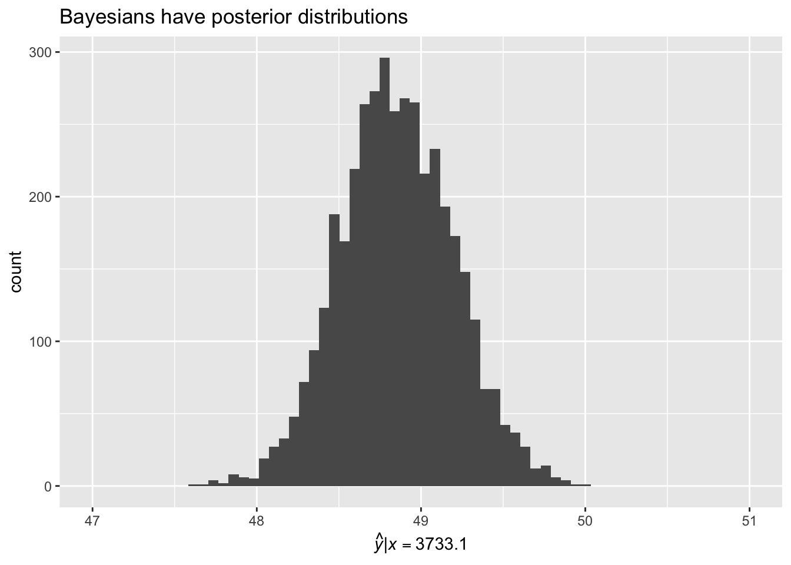
Here’s what that is for the OLS model.
predict(fit1.ols,
newdata = tibble(body_mass_g = mean(chinstrap$body_mass_g)),
interval = "confidence") %>%
data.frame() %>%
ggplot(aes(x = fit, xmin = lwr, xmax = upr, y = 0)) +
geom_pointrange() +
scale_y_continuous(NULL, breaks = NULL) +
labs(title = "Frequentists have point estmates and 95% CI's",
x = expression(hat(italic(y))*'|'*italic(x)==3733.1)) +
coord_cartesian(xlim = c(47, 51))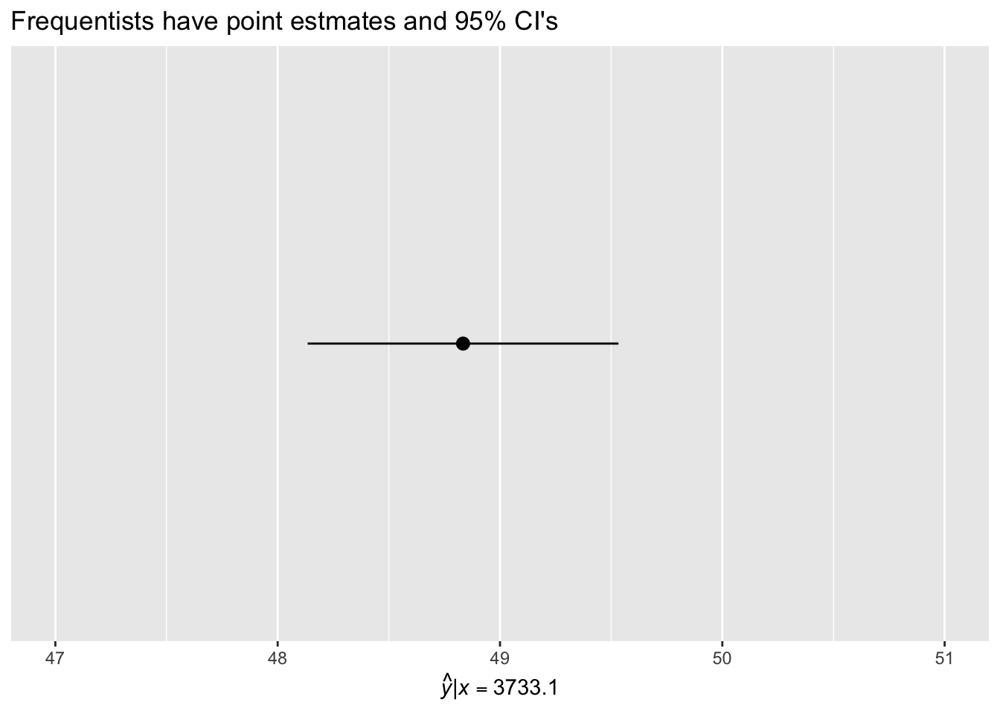
Another handy way to present a Bayesian posterior is as a density with a point-interval summary below.
library(ggdist) #for stat_half_eye and mean_qi
draws %>%
mutate(body_mass_g = mean(chinstrap$body_mass_g)) %>%
mutate(y_hat = beta0 + beta1 * body_mass_g) %>%
ggplot(aes(x = y_hat)) +
stat_halfeye(point_interval = mean_qi, .width = .95) +
# scale_y_continuous(NULL, breaks = NULL) +
labs(title = "Bayesians have posterior distributions",
x = expression(hat(italic(y))*'|'*italic(x)==3733.1)) +
coord_cartesian(xlim = c(47, 51))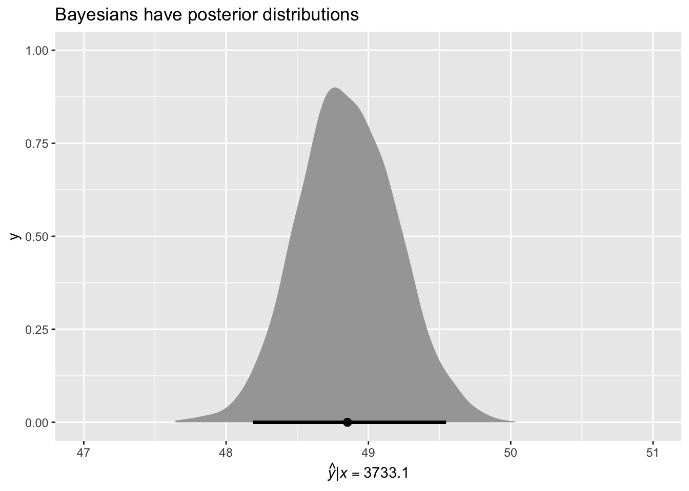
The dot at the base of the plot is the posterior mean, and the horizontal line marks the 95% percentile-based interval. If you’d like to mark the median instead, set point_interval = median_qi. If you’re like a different kind of horizontal interval, adjust the .width argument.
draws %>%
mutate(body_mass_g = mean(chinstrap$body_mass_g)) %>%
mutate(y_hat = beta0 + beta1 * body_mass_g) %>%
ggplot(aes(x = y_hat)) +
# note the changes to this line
stat_halfeye(point_interval = median_qi, .width = c(.5, .99)) +
scale_y_continuous(NULL, breaks = NULL) +
labs(title = "Bayesians have posterior distributions",
subtitle = "The dot marks the median.\nThe thicker line marks the 50% interval, and\nthe thinner line marks the 99% interval.",
x = expression(hat(italic(y))*'|'*italic(x)==3733.1)) +
coord_cartesian(xlim = c(47, 51))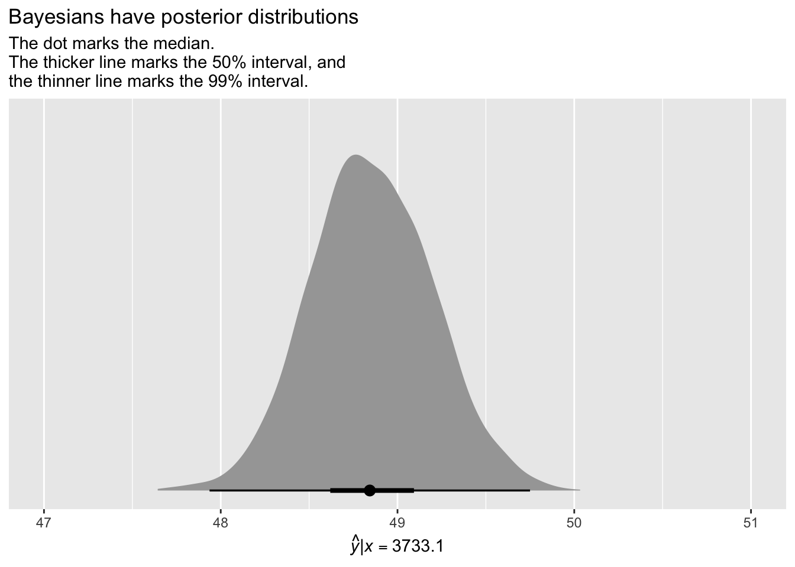
You can describe a Bayesian posterior in a lot of different ways. Earlier we said the posterior mean is the Bayesian point estimate. This isn’t strictly true. Means are very popular, but you can summarize a posterior by its mean, median, or mode.
Let’s see what this looks like in practice. First, we compute and save our statistics for each of our model parameters.
points <- draws %>%
rename(`beta[0]` = beta0,
`beta[1]` = beta1) %>%
pivot_longer(cols = c(`beta[0]`, `beta[1]`, sigma),
names_to = "parameter") %>%
group_by(parameter) %>%
summarise(mean = mean(value),
median = median(value),
mode = Mode(value)) %>%
pivot_longer(starts_with("m"), names_to = "statistic")
# what?
points# A tibble: 9 × 3
parameter statistic value
<chr> <chr> <dbl>
1 beta[0] mean 32.2
2 beta[0] median 32.3
3 beta[0] mode 32.9
4 beta[1] mean 0.00446
5 beta[1] median 0.00445
6 beta[1] mode 0.00425
7 sigma mean 2.93
8 sigma median 2.91
9 sigma mode 2.93 Now plot.
draws %>%
rename(`beta[0]` = beta0,
`beta[1]` = beta1) %>%
pivot_longer(cols = c(`beta[0]`, `beta[1]`, sigma),
names_to = "parameter") %>%
ggplot(aes(x = value)) +
geom_density() +
geom_vline(data = points,
aes(xintercept = value, color = statistic),
size = 3/4) +
scale_color_viridis_d(option = "A", end = .8) +
scale_y_continuous(NULL, breaks = NULL) +
xlab("parameter space") +
facet_wrap(~ parameter, labeller = label_parsed, scales = "free", ncol = 1) +
theme(strip.text = element_text(size = 14))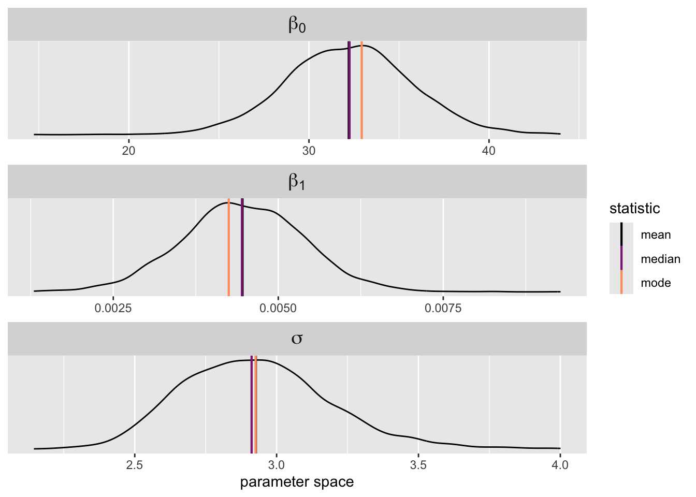
With many brms functions, you can request the median by setting robust = TRUE. For example:
Estimate Est.Error Q2.5 Q97.5
Intercept 32.208875451 3.5034661107 25.299619059 39.117082452
body_mass_g 0.004458494 0.0009335195 0.002604986 0.006302437 Estimate Est.Error Q2.5 Q97.5
Intercept 32.252400005 3.4024239536 25.299619059 39.117082452
body_mass_g 0.004449546 0.0009023721 0.002604986 0.006302437Earlier we said the posterior SD is the Bayesian standard error. This isn’t strictly true. You can also use the median absolute deviation (MAD SD). If we let \(M\) stand for the median of some variable \(y\), which varies across \(i\) cases, we can define the MAD SD as
\[\textit{MAD SD} = 1.4826 \times \operatorname{median}_{i = 1}^n |y_i - M|,\]
where \(1.4826\) is a constant that scales the MAD SD into a standard-deviation metric. Here’s what this looks like in practice.
# A tibble: 1 × 1
MAD_SD
<dbl>
1 3.40Base R also has a mad() function.
Help on topic 'mad' was found in the following packages:
Package Library
posterior /Library/Frameworks/R.framework/Versions/4.4-arm64/Resources/library
stats /Library/Frameworks/R.framework/Versions/4.4-arm64/Resources/library
Using the first match ...# A tibble: 1 × 1
MAD_SD
<dbl>
1 3.40You can request the MAD SD from many brms functions by setting robust = TRUE.
Estimate Est.Error Q2.5 Q97.5
Intercept 32.208875451 3.5034661107 25.299619059 39.117082452
body_mass_g 0.004458494 0.0009335195 0.002604986 0.006302437 Estimate Est.Error Q2.5 Q97.5
Intercept 32.252400005 3.4024239536 25.299619059 39.117082452
body_mass_g 0.004449546 0.0009023721 0.002604986 0.006302437Bayesians describe the widths of their posteriors with intervals. I’ve seen these variously described as confidence intervals, credible intervals, probability intervals, and even uncertainty intervals. My recommendation is just pick a term, and clearly tell your audience what you mean (e.g., at the end of a Method section in a journal article).
To my eye, the most popular interval is a 95% percentile-based interval. 95% is conventional, perhaps due to the popularity of the 95% frequentist confidence interval, which is related to the 0.05 alpha level used for the conventional \(p\)-value cutoff. However, you can use other percentiles. Some common alternatives are 99%, 89%, 80%, and 50%.
Also, Bayesian intervals aren’t always percentile based. An alternative is the highest posterior density interval (HPDI), which has mathematical properties some find desirable.
brms only supports percentile-based intervals, but it does allow for a variety of different ranges via the prob argument. For example, here’s how to request 80% intervals in summary().
Family: gaussian
Links: mu = identity; sigma = identity
Formula: bill_length_mm ~ 1 + body_mass_g
Data: chinstrap (Number of observations: 68)
Draws: 4 chains, each with iter = 2000; warmup = 1000; thin = 1;
total post-warmup draws = 4000
Regression Coefficients:
Estimate Est.Error l-80% CI u-80% CI Rhat Bulk_ESS Tail_ESS
Intercept 32.21 3.50 27.87 36.70 1.00 4897 2940
body_mass_g 0.00 0.00 0.00 0.01 1.00 4965 2924
Further Distributional Parameters:
Estimate Est.Error l-80% CI u-80% CI Rhat Bulk_ESS Tail_ESS
sigma 2.93 0.26 2.61 3.26 1.00 2058 1873
Draws were sampled using sampling(NUTS). For each parameter, Bulk_ESS
and Tail_ESS are effective sample size measures, and Rhat is the potential
scale reduction factor on split chains (at convergence, Rhat = 1).Regarding interval widths:
Regarding interval types:
Matthew Kay’s tidybayes package (https://mjskay.github.io/tidybayes/) offers an array of convenience functions for summarizing posterior distributions with points and intervals. See the Point summaries and intervals section of Kay’s Extracting and visualizing tidy draws from brms models vignette (https://mjskay.github.io/tidybayes/articles/tidy-brms.html#point-summaries-and-intervals) for a detailed breakdown. In short, the family of functions use the naming scheme [median|mean|mode]_[qi|hdi]. Here are a few examples.
# A tibble: 1 × 6
beta0 .lower .upper .width .point .interval
<dbl> <dbl> <dbl> <dbl> <chr> <chr>
1 32.2 25.3 39.1 0.95 mean qi # A tibble: 1 × 6
beta0 .lower .upper .width .point .interval
<dbl> <dbl> <dbl> <dbl> <chr> <chr>
1 32.3 27.9 36.7 0.8 median qi # A tibble: 2 × 6
beta0 .lower .upper .width .point .interval
<dbl> <dbl> <dbl> <dbl> <chr> <chr>
1 32.9 29.9 34.4 0.5 mode hdi
2 32.9 25.1 38.8 0.95 mode hdi As an aside, the Mode() function we used a while back was also from tidybayes.
Remember how we said the draw was something like 4,000 separate equations for our Bayesian model? Let’s see that again.
# A tibble: 6 × 5
.draw beta0 beta1 body_mass_g y_hat
<int> <dbl> <dbl> <dbl> <dbl>
1 1 30.6 0.00505 3733. 49.5
2 2 32.8 0.00437 3733. 49.1
3 3 35.1 0.00378 3733. 49.2
4 4 32.8 0.00436 3733. 49.1
5 5 34.8 0.00384 3733. 49.2
6 6 34.1 0.00405 3733. 49.2One way we might emphasize the 4,000 equations is with a spaghetti plot. When we display the fitted line for bill_length_mm over the range of body_mass_g values, we can display a single line for each posterior draw. Here’s what that can look like.
[1] 2700 4800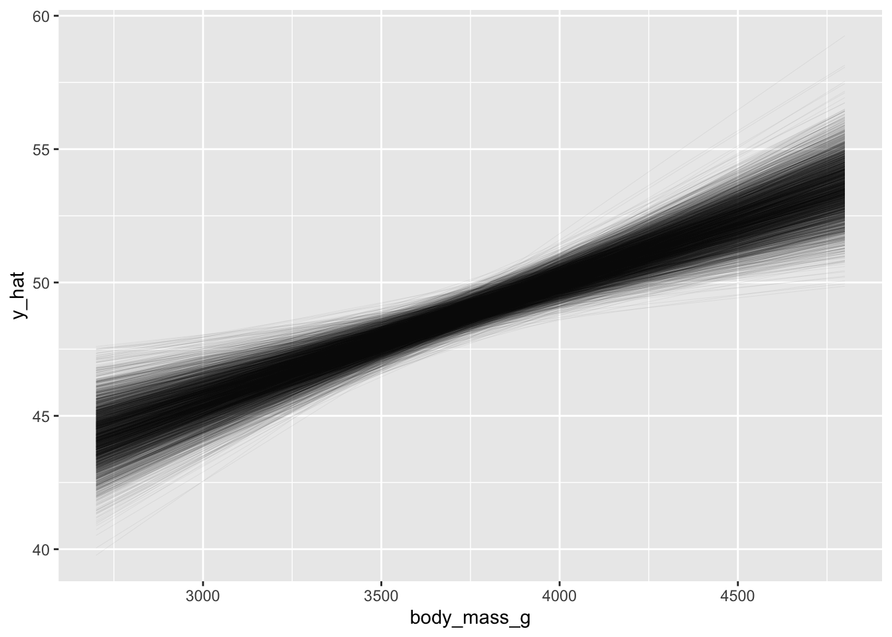
It might be easier to see what’s going on with a random subset of, say, 10 of the posterior draws.
set.seed(10)
draws %>%
# take a random sample of 10 rows
slice_sample(n = 10) %>%
select(.draw, beta0, beta1) %>%
expand_grid(body_mass_g = range(chinstrap$body_mass_g)) %>%
mutate(y_hat = beta0 + beta1 * body_mass_g) %>%
ggplot(aes(x = body_mass_g, y = y_hat, group = .draw)) +
geom_line(linewidth = 1/2, alpha = 1/2)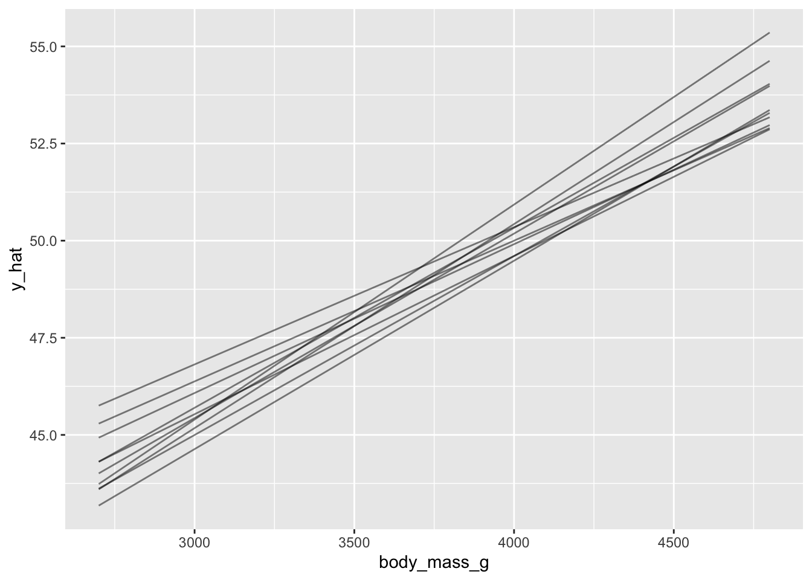
While we’re at it, let’s take 20 draws and do a little color coding.
set.seed(20)
draws %>%
# take a random sample of 20 rows
slice_sample(n = 20) %>%
select(.draw, beta0, beta1) %>%
expand_grid(body_mass_g = range(chinstrap$body_mass_g)) %>%
mutate(y_hat = beta0 + beta1 * body_mass_g) %>%
ggplot(aes(x = body_mass_g, y = y_hat, group = .draw, color = beta0)) +
geom_line() +
scale_color_viridis_c(expression(beta[0]~(the~intercept)), end = .9)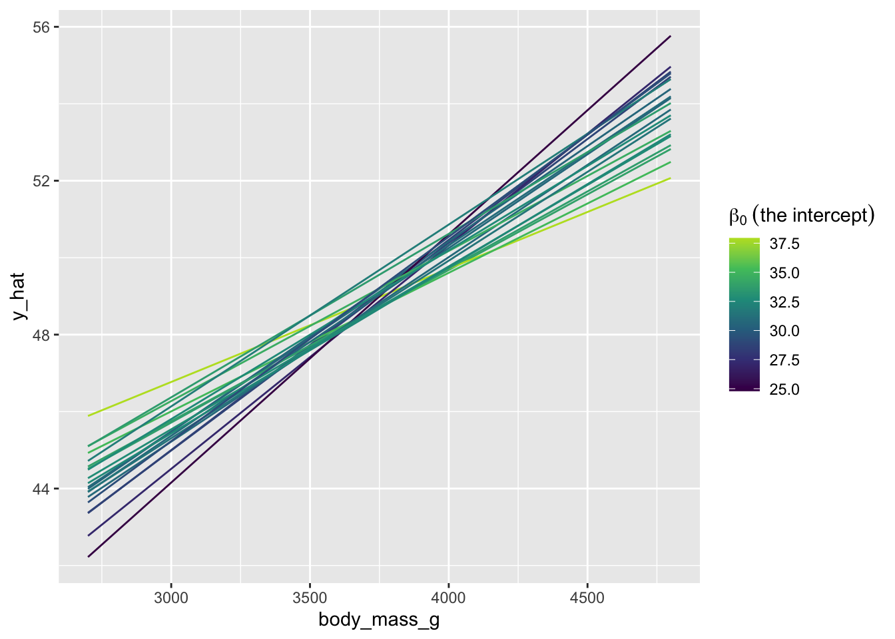
Do you remember how we said \(\beta_0\) and \(\beta_1\) had a strong negative correlation? Notice how the lines computed by lower \(\beta_0\) values also tend to have higher slopes. This will happen all the time with conventional regression models.
In the last part, we made a subset of the penguins data called gentoo, which was only the cases for which species == "Gentoo". Do that again and refit the Bayesian model to those data. Can you then remake some of the figures in this file with the new version of the model?
Gelman, A., Hill, J., & Vehtari, A. (2020). Regression and other stories. Cambridge University Press. https://doi.org/10.1017/9781139161879
Kruschke, J. K. (2015). Doing Bayesian data analysis: A tutorial with R, JAGS, and Stan. Academic Press. https://sites.google.com/site/doingbayesiandataanalysis/
McElreath, R. (2020). Statistical rethinking: A Bayesian course with examples in R and Stan (Second Edition). CRC Press. https://xcelab.net/rm/statistical-rethinking/
McElreath, R. (2015). Statistical rethinking: A Bayesian course with examples in R and Stan. CRC press. https://xcelab.net/rm/statistical-rethinking/
R version 4.4.1 (2024-06-14)
Platform: aarch64-apple-darwin20
Running under: macOS Ventura 13.2.1
Matrix products: default
BLAS: /Library/Frameworks/R.framework/Versions/4.4-arm64/Resources/lib/libRblas.0.dylib
LAPACK: /Library/Frameworks/R.framework/Versions/4.4-arm64/Resources/lib/libRlapack.dylib; LAPACK version 3.12.0
locale:
[1] en_US.UTF-8/en_US.UTF-8/en_US.UTF-8/C/en_US.UTF-8/en_US.UTF-8
time zone: America/New_York
tzcode source: internal
attached base packages:
[1] stats graphics grDevices utils datasets methods base
other attached packages:
[1] ggdist_3.3.2 broom.mixed_0.2.9.6 broom_1.0.8
[4] brms_2.22.0 Rcpp_1.0.13 ggside_0.3.1
[7] lubridate_1.9.3 forcats_1.0.0 stringr_1.5.1
[10] dplyr_1.1.4 purrr_1.0.2 readr_2.1.5
[13] tidyr_1.3.1 tibble_3.2.1 ggplot2_3.5.1
[16] tidyverse_2.0.0
loaded via a namespace (and not attached):
[1] tidyselect_1.2.1 viridisLite_0.4.2 farver_2.1.2
[4] loo_2.8.0 fastmap_1.2.0 tensorA_0.36.2.1
[7] digest_0.6.36 estimability_1.5.1 timechange_0.3.0
[10] lifecycle_1.0.4 StanHeaders_2.32.10 processx_3.8.4
[13] magrittr_2.0.3 posterior_1.6.0 compiler_4.4.1
[16] rlang_1.1.4 tools_4.4.1 utf8_1.2.4
[19] yaml_2.3.10 knitr_1.48 labeling_0.4.3
[22] bridgesampling_1.1-2 htmlwidgets_1.6.4 curl_5.2.1
[25] pkgbuild_1.4.4 plyr_1.8.9 abind_1.4-8
[28] withr_3.0.1 grid_4.4.1 stats4_4.4.1
[31] fansi_1.0.6 xtable_1.8-4 colorspace_2.1-1
[34] future_1.34.0 inline_0.3.21 emmeans_1.10.7
[37] globals_0.16.3 scales_1.3.0 cli_3.6.3
[40] mvtnorm_1.3-3 rmarkdown_2.27 generics_0.1.3
[43] RcppParallel_5.1.10 reshape2_1.4.4 tzdb_0.4.0
[46] rstan_2.32.6 splines_4.4.1 bayesplot_1.11.1
[49] parallel_4.4.1 matrixStats_1.5.0 vctrs_0.6.5
[52] Matrix_1.7-0 jsonlite_1.8.8 callr_3.7.6
[55] hms_1.1.3 listenv_0.9.1 glue_1.8.0
[58] parallelly_1.42.0 ps_1.7.7 codetools_0.2-20
[61] distributional_0.5.0 stringi_1.8.4 gtable_0.3.5
[64] QuickJSR_1.5.1 palmerpenguins_0.1.1 munsell_0.5.1
[67] pillar_1.9.0 furrr_0.3.1 htmltools_0.5.8.1
[70] Brobdingnag_1.2-9 R6_2.5.1 evaluate_0.24.0
[73] lattice_0.22-6 backports_1.5.0 rstantools_2.4.0
[76] coda_0.19-4.1 gridExtra_2.3 nlme_3.1-164
[79] checkmate_2.3.2 mgcv_1.9-1 xfun_0.52
[82] pkgconfig_2.0.3